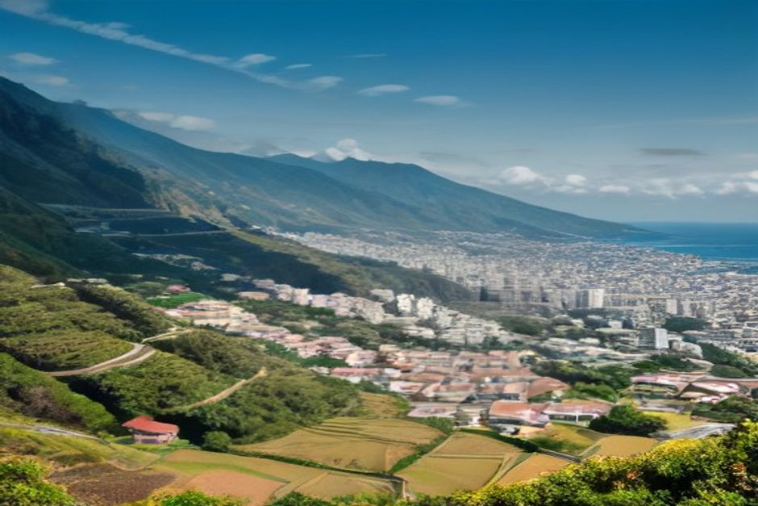

Madeira gets sold as a hiking and honeymoon island, which makes families underrate it. In practice it's an easy place to travel with kids — short drives, mild weather almost any month, and enough non-hiking activities to fill a week. Here's what actually works, and what to skip.
Is Madeira a good destination for a family holiday?
Yes — Madeira's biggest advantage for families is that nothing is far away. Funchal, the airport and most of the south coast resorts sit within a 40-minute drive of each other, so you're not losing whole days to transfers the way you might in a larger destination. The island's subtropical climate keeps daytime temperatures mild through winter and warm without being oppressive in summer, and because Madeira has almost no natural sand beaches, most swimming happens in calm, shallow, purpose-built sea-water pools rather than open surf — genuinely easier to supervise young children in than a beach with waves.

What can kids actually do in Madeira?
The activities that work best for children don't involve hiking. The Monte cable car up from Funchal is a ride in itself, and the carros de cesto — wicker toboggans steered by two men in straw hats down the streets below Monte — are the single most memorable thing most kids do on the island. The CR7 Museum in Funchal and the Museu da Baleia (Whale Museum) in Machico both work well for kids curious about football or marine life, and Santa Catarina Park in Funchal has a playground and duck pond for a slower afternoon. For older kids, a boat trip covers more ground — literally — than almost anything on land, and needs no walking at all.
Can young children go on a boat trip in Madeira?
Yes, and a private charter suits families far better than a shared tour. On a shared boat you're locked into someone else's schedule and a full deck of strangers; on a private one — like Chifbay's day trip from Marina do Funchal — the boat is yours alone, so you can shorten a swim stop if a toddler's had enough, keep life jackets on the whole time, and skip anything that doesn't suit the group. The day trip runs the calmest stretch of coast between Câmara de Lobos and Fajã dos Padres, with swim stops rather than open-water crossings, which matters more for families than for adults travelling without kids. The sunset trip, by contrast, has no swimming — the water is too cold by 18:30 — so it suits older kids better than toddlers who came for a splash.
Which beaches and pools are safest for families?
The calmest, most family-friendly swimming in Madeira is in enclosed, sea-fed pools rather than open beaches. Porto Moniz's natural volcanic pools are the most famous, though they can get choppy in swell and suit confident swimmers better than very young children; Funchal's own Lido complex on the south side of the city is calmer and closer to most hotels, with lifeguards and shallow sections. Calheta has the island's one imported-sand beach, gently sloping and popular with families for exactly that reason. If you're coming by boat rather than road, sheltered coves like Fajã dos Padres give flat, current-free water that's easier to manage with kids than an open beach.
Where should families stay in Madeira?
Funchal itself is the easiest base — it puts the airport, the marina, restaurants and the Lido pools all within a short taxi ride, so you're not dependent on a hire car every day. Families wanting a quieter, more resort-style stay tend to head slightly west toward Câmara de Lobos or Ponta do Sol, both still close enough to Funchal for a day trip in either direction. Wherever you stay, book anything requiring a fixed group size — private boat trips included — a few weeks ahead in July and August, when Madeira's own summer visitors add to the demand.
What should you pack for Madeira with kids?
Layers matter more than sun cream alone — Madeira's microclimates mean a warm morning in Funchal can turn cool and damp an hour later up at altitude, so a light jacket for each child is worth the suitcase space even in summer. Reef-safe sun cream, a proper sun hat and swim shoes for volcanic-rock pools are the other essentials; the rock at most natural pools is sharp underfoot, and bare feet are the single most common cause of a ruined afternoon.
The island rewards families who plan around the water, not around the mountains.
Madeira won't feel like a typical family beach holiday, and that's the point — it trades wide sand and waterparks for calm pools, short drives and a coastline best explored from a boat. Build a few slow, non-hiking days into the itinerary and it holds up as well for a five-year-old as it does for a honeymoon.